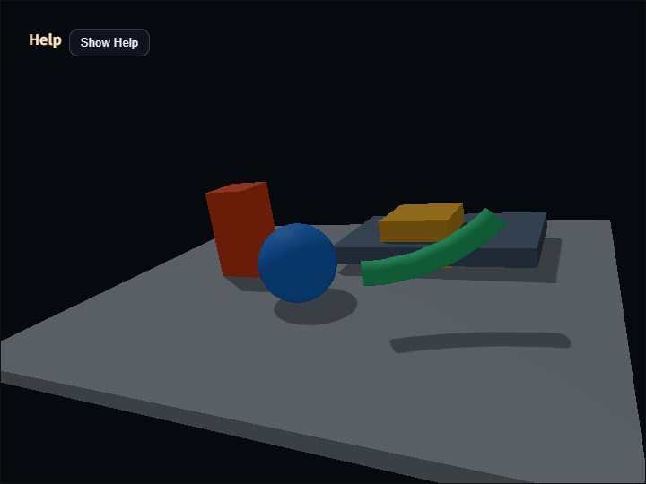

compute_shadow_map
English | 日本語

Overview
This sample verifies one directional-light shadow map. webg/ShadowMapPass.js renders the scene from the light into a depth texture, while GeometryBufferPass produces camera-space albedo, normals, and depth. webg/ComputeShadowPass.js reconstructs camera positions in world space, projects them into light space, and compares them with the shadow map.
Shadow-map generation stays in a Render Pass, while shadow evaluation and composition use a Compute Pass. Triangle rasterization and depth testing remain in the Render Pipeline, and the Compute Shader focuses on bias, PCF, and debug views. This follows the same responsibility split in which GeometryBufferPass produces inputs and passes such as SsaoPass or DeferredLightingPass consume them.
ShadowMapPass is a webg core implementation. It collects static and skinned Shapes from Space and renders them with a depth-only Render Pass. For skinned Shapes, it reads the standard Shape's two vertex buffers and the Skeleton matrix palette, so the shadow map uses the same bone pose as normal rendering and GeometryBufferPass. Alpha testing is outside this sample's supported scope and is not silently replaced with another path.
FrameTimer measures the shadow-depth and G-buffer Render Passes plus the shadow-evaluation Compute Pass with timestamp queries. The CommandPalette and Help panel display GPU Compute, GPU Render, GPU Total, and GPU Load. GPU Load is the measured total GPU time divided by the frame interval. The final fullscreen copy is outside the measured range.
Processing Flow
Space
-> ShadowMapPass
-> directional light depth
Space
-> GeometryBufferPass
-> camera albedo / normal / depth
camera G-buffer + light depth
-> ComputeShadowPass
-> shadowed color
-> FullscreenPass
-> canvasThe directional light uses an orthographic projection. This sample can switch between fixed, which keeps one predefined orthographic box, and frustum-fit, which transforms the camera frustum into light space and fits the shadow map to that AABB. The camera frustum itself keeps the same shape and size while near / far / fov / aspect stay unchanged, but the AABB of those eight frustum corners in light space changes with the camera-light relationship. frustum-fit can concentrate texels on the visible region, but if it includes too much distance its light-space AABB can grow larger than the fixed box and reduce precision.
Fit Far controls how far the camera frustum extends when frustum-fit builds that light-space AABB. A larger value keeps more distant shadows, but also spreads the same 1024×1024 shadow map over a wider space. A smaller value concentrates resolution on the near scene, but shadows beyond that distance are excluded from the fit target.
Spot-light shadows are handled by the core SpotShadowMapPass and ComputeSpotShadowPass. A spot light builds a perspective light view-projection matrix from its position, direction, FOV, inner / outer angles, near plane, and far plane, then fades lighting outside the cone. This sample focuses on the low-level directional-light setup, so spot-light shadow verification belongs to applications that use ComputeEffectPipeline with shadow.type: "spot".
How to Run
- Open ./compute_shadow_map.html
- Use a browser with WebGPU support
- Control the camera with drag, arrow keys, and the mouse wheel
Controls and Checkpoints
Ftogglesfixed / frustum-fitVcycles throughcomposite / shadow / albedo / normal / depth1and2decrease or increase the constant depth bias3cycles the PCF radius through 0, 1, and 2Spacepauses or resumes the green skinned caster's movement, rotation, and bending- Use the CommandPalette to change
Fit Far - Compare the
Light Boxwidth, height, near, and far values in the Help panel - Confirm that GPU time and GPU Load update in the CommandPalette and Help panel
The shadow view displays visibility as white and occlusion as black. Fine self-shadowing patterns usually indicate insufficient bias, while a detached shadow suggests excessive bias. PCF radius 0 uses one sample, radius 1 uses 3×3 samples, and radius 2 uses 5×5 samples.
The green cylinder near the camera is closed with flat caps at both ends, bends continuously with five bones, and also moves and rotates as a Node. Cap vertices are separate from the side vertices and fixed to the corresponding end bone, so the caps do not separate while bending. Its movement, rotation, bending, and shadow silhouette on the floor must change together. ShadowMapPass reuses one bone-palette Buffer and Bind Group per Skeleton and updates only the current matrix palette each frame. Static Shapes use the same pipeline with an explicit skinning-disabled flag and a formal dummy vertex binding, so bone transforms cannot be applied accidentally.
This sample covers static and skinned opaque Shapes, one directional light, and a fixed 1024×1024 shadow map. Spot-light support is available as a core API, but this sample does not exercise it. Cascaded Shadow Maps, point lights, and alpha testing are outside its scope.